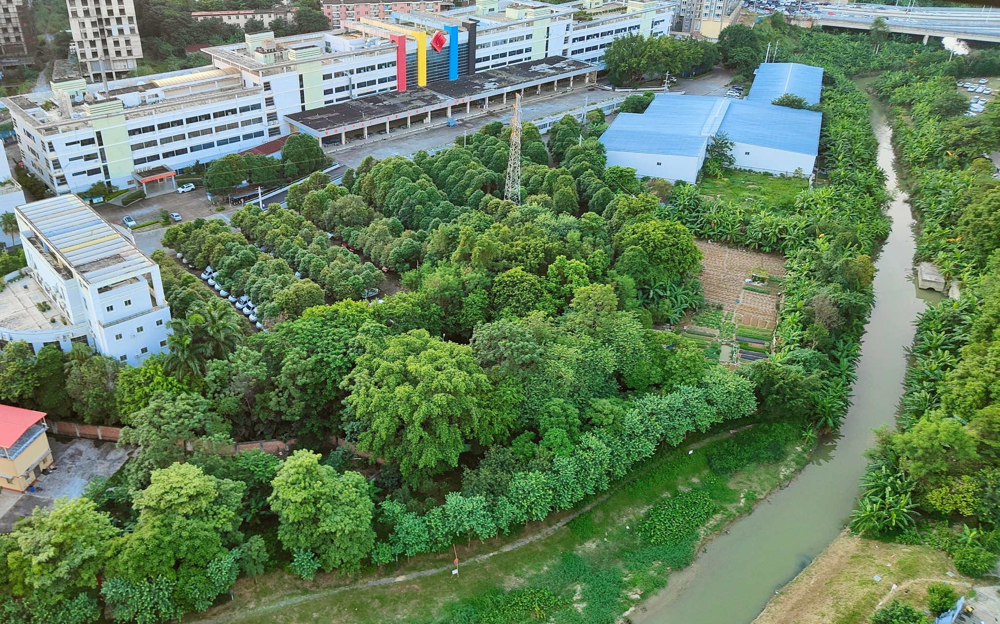
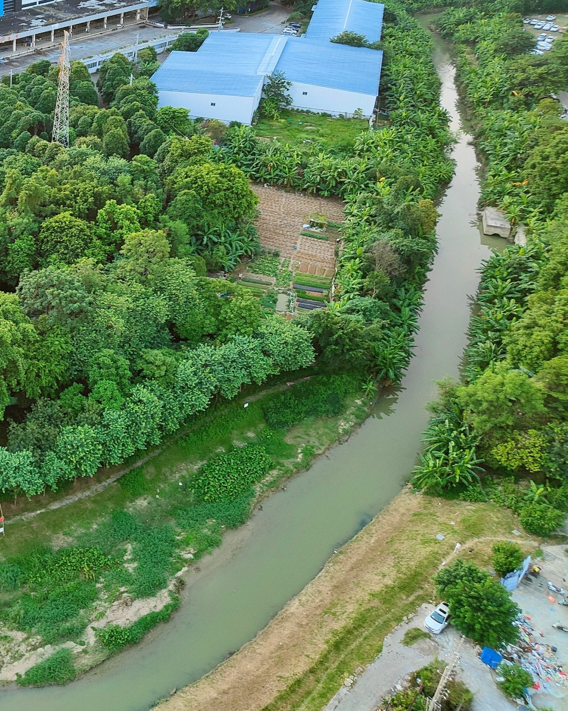
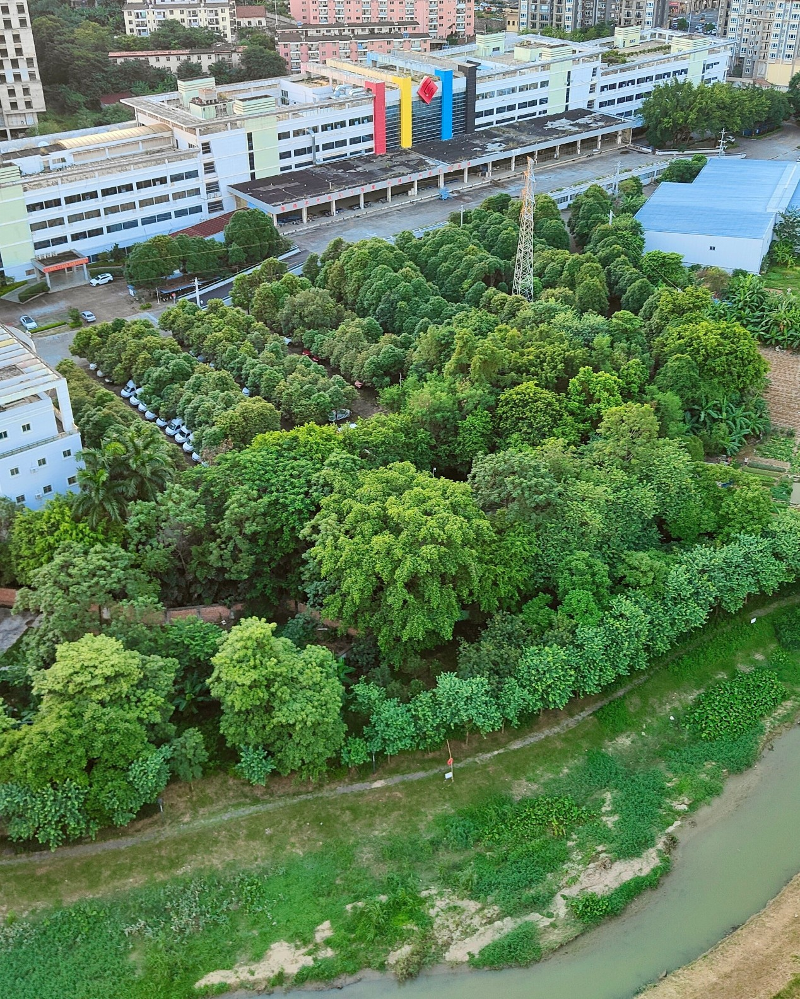
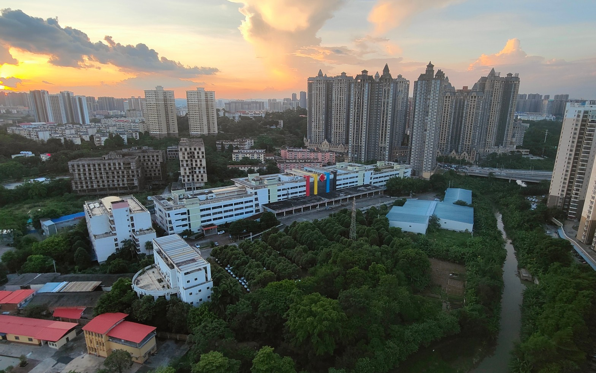
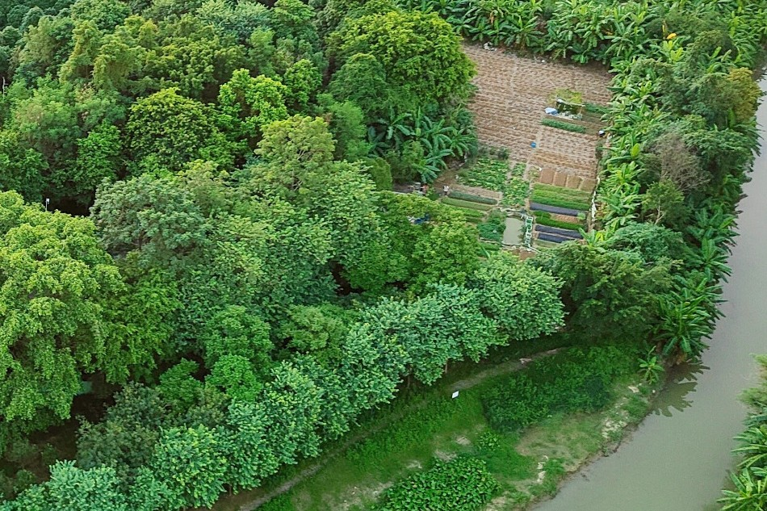
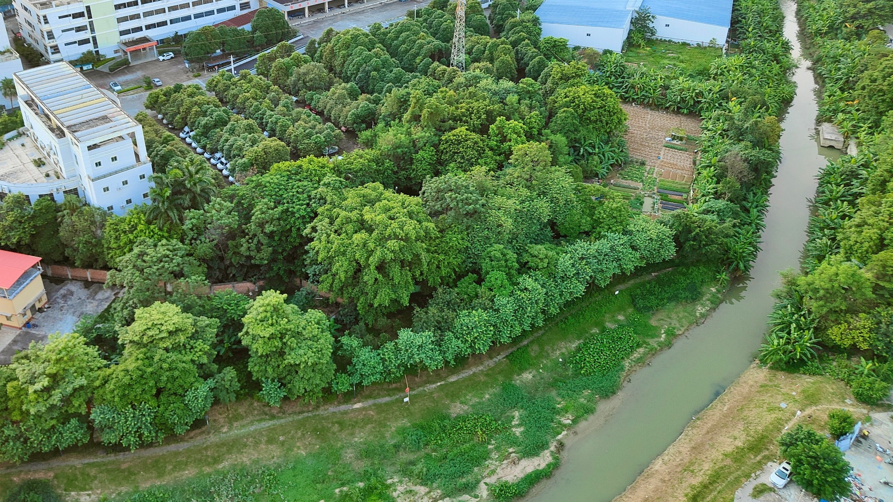

Enclosed landscape / 封闭绿地
Existing vegetation is visually prominent but difficult to enter, cross and use as an everyday public space.

Landscape Architecture + Public Realm / 景观建筑与公共空间策略
The site is not treated as an empty plot waiting to be landscaped. Its mature tree canopy, cultivated clearings, informal paths and river corridor already form a strong spatial identity. The proposal works with these existing systems, opening them carefully to the surrounding neighbourhoods.
设计不把场地视为空白用地，而是将成熟树冠、果林耕作、非正式路径与河道视为项目最重要的空间资源。更新从保留与疏通开始，以克制的介入让这片城市绿岛重新向周边社区开放。
Khu đất không được xem như một bề mặt trống cần tạo cảnh quan mới. Tán cây trưởng thành, khoảng trồng trọt, lối đi tự phát và hành lang sông đã tạo nên bản sắc không gian rõ rệt. Đề xuất bảo tồn các hệ thống này và mở chúng một cách có chọn lọc cho cộng đồng xung quanh.


The site sits between high-density housing, existing institutional and industrial buildings, local roads and a narrow river corridor. Seen from above, it remains one of the few continuous pieces of mature vegetation within the surrounding built fabric.
场地位于高密度住宅、既有公共及工业建筑、城市道路与狭长河道之间，是周边建成环境中少数仍保持连续树冠的绿地。其生态基础良好，但公共属性、可达性与河岸联系尚未形成。
Khu đất nằm giữa các khu nhà ở mật độ cao, công trình hiện hữu, đường đô thị và một hành lang sông hẹp. Đây là một trong số ít mảng cây xanh liên tục còn lại trong cấu trúc xây dựng xung quanh, nhưng khả năng tiếp cận công cộng và kết nối với bờ sông vẫn còn hạn chế.
Existing vegetation is visually prominent but difficult to enter, cross and use as an everyday public space.
Surrounding neighbourhoods face the site from several directions, yet entrances and continuous pedestrian routes are unclear.
The watercourse defines the site edge but is not yet part of a safe, shaded and continuous public experience.
The orchard and cultivated plots carry local memory, but lack supporting spaces for children, exercise, rest and community use.
The project proposes a continuous slow-mobility loop that follows the existing woodland and river edge. New entrances extend neighbourhood walking routes into the park, while a sequence of clearings introduces public programs without erasing the orchard structure.
项目以连续慢行环线组织整体空间：环线顺应现有林地与河岸，多个入口承接周边社区路径；儿童活动、社区花园、林下休憩和河岸平台被布置在现有林间空地中，避免大规模清除与硬化。
Một vòng đi bộ liên tục được bố trí theo cấu trúc rừng hiện hữu và bờ sông. Các lối vào mới nối đường đi của khu dân cư với công viên, trong khi các chương trình công cộng được đặt trong những khoảng trống sẵn có để hạn chế việc chặt cây và bê tông hóa.
Retain mature trees and orchard structure as the park's climatic and spatial foundation.
Create an inclusive walking and cycling circuit linking every neighbourhood edge.
Insert play, exercise, rest and community uses into existing open pockets.
Use permeable surfaces, planted banks and light-touch platforms along the water.



The program is distributed as a sequence rather than concentrated in one monumental plaza. Active uses are placed near visible entrances; quiet uses remain under the tree canopy; community cultivation continues within productive clearings; and the river edge becomes a slower linear landscape.
清晰的社区入口、遮阴廊架、导览与可举行小型活动的共享前场，形成公园与城市之间开放而安全的过渡。
将儿童游乐、轻运动和弹性草坪集中在可见度较高的林间空地中，便于照看，也减少对核心林地的干扰。
保留部分果林与耕作纹理，将其转化为可参与、可学习、可持续维护的社区生产性景观。
连续步道、低干预观景平台与生态岸线共同构成慢行河岸，让水体从场地边界转变为公共体验的核心。
The experience is organised as a gradual transition: open and visible at the neighbourhood entrances, sheltered beneath the orchard canopy, and quiet along the river. Architecture remains light—pergolas, platforms, signs and service pavilions support use without competing with the landscape.
空间体验由城市向自然逐步过渡：入口开放、清晰且具有可见性；果林内部形成浓荫与停留；临水区域则更安静、更缓慢。建筑以廊架、平台、导视和小型服务设施轻触场地，不与景观争夺主体地位。
Trải nghiệm chuyển tiếp dần từ rìa đô thị mở và dễ nhận biết, vào vùng bóng râm của vườn cây, rồi chậm lại bên bờ sông. Các cấu trúc kiến trúc nhẹ chỉ hỗ trợ sử dụng mà không lấn át cảnh quan.
